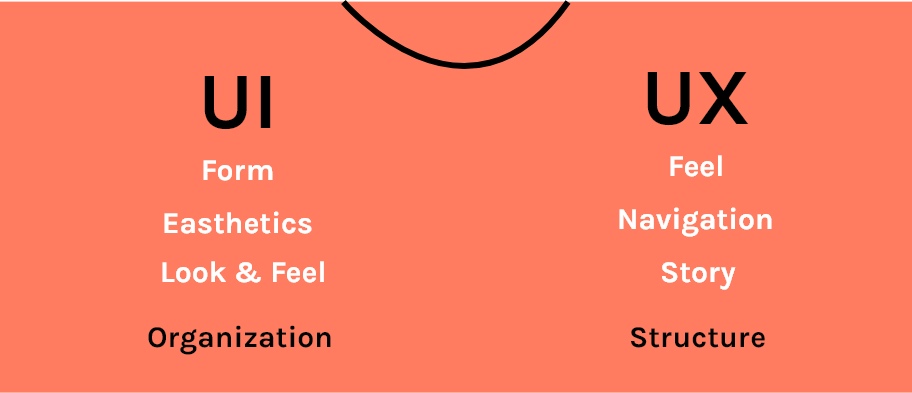
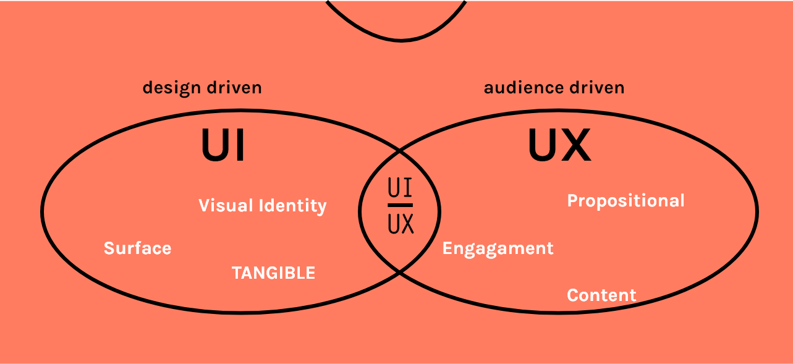
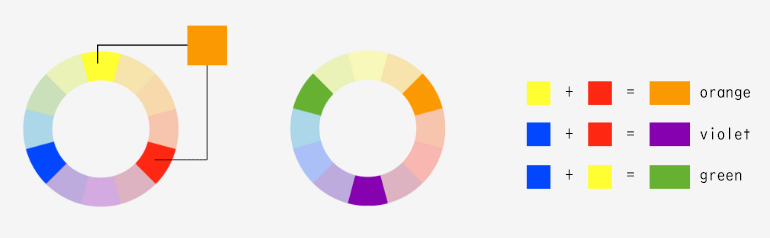
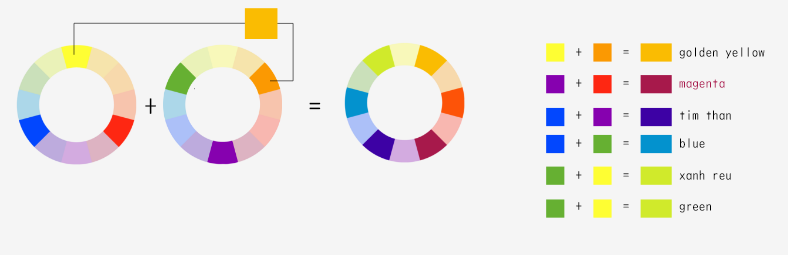

- HTML
-
- Introduction and some key concepts
- Anatomy of an HTML document
- HTML Formatting Elements
- Tips for you
- CSS
-
- Introduction and some key concepts
- SASS and SCSS
- Library popular
- Javascript
-
- Define
- JavaScript Terms
- Library & frameworks of javascript
- Tips for you
- UI-UX
-
- Define
- Design trends in May
Introduce about HTML, CSS, JS, UI-UX and tips

Contents
HTML
Introduction and some key concepts
Concept of HTML
- HTML (Hypertext Markup Language) is the code that is used to structure a web page and its content.
- For example, content could be structured within a set of paragraphs, a list of bulleted points, or using images and data tables. As the title suggests, this article will give you a basic understanding of HTML and its functions.
- HTML5 is the latest version of HTML, the code that describes web pages. It's actually three kinds of code: HTML, which provides the structure; Cascading Style Sheets (CSS), which take care of presentation; and JavaScript, which makes things happen.
HTML Element

- The main parts of element are as follows:
- The opening tag: This consists of the name of the element (in this case, p), wrapped in opening and closing angle brackets.
- The closing tag: This is the same as the opening tag, except that it includes a forward slash before the element name.
- The content: This is the content of the element, which in this case is just text.
- The element: The opening tag, the closing tag, and the content together comprise the element.
- The difference between start tags and end tags is that the latter includes a slash before the tag name.
- If element has no content that is called Empty Element.
- HTML elements can be nested (elements can contain elements).
- Some specials elements have no the closing tag (img, hr, br, input,…)
Block level elements in HTML: A block-level element always starts on a new line and takes up the full width available (stretches out to the left and right as far as it can).
Inline elements in HTML: An inline element does not start on a new line and only takes up as much width as necessary.
1. Image Element
Image maps

<img src="img/html_image_map.jpg" alt="Digital tech" />
<map name="workmap">
<area shape="rect" coords="28,34,218,278" alt="Computer" href="computer.htm">
<area shape="rect" coords="230,135,265,205" alt="Phone" href="phone.htm">
<area shape="circle" coords="270,238,36" alt="Cup of coffee" href="coffee.htm">
</map>
Picture
<picture>
<source media="(min-width: 1024px)" srcset="img/picture/2.jpg">
<source media="(min-width: 768px)" srcset="img/picture/3.jpg">
<img src="img/picture/1.jpg" alt="Picture">
</picture>
2 .List element
Unordered List
<ul>
<li>Admin</li>
<li>Tester</li>
<li>Developer</li>
</ul>- Admin
- Tester
- Developer
Ordered List
<ol>
<li>Admin</li>
<li>Tester</li>
<li>Developer</li>
</ol>- Admin
- Tester
- Developer
Description Lists
<dl>
<dt>Admin</dt>
<dd>--Human management</dd>
<dt>Tester</dt>
<dd>--Product Quality Management</dd>
<dt>Developer</dt>
<dd>--Create a product</dd>
</dl>- Admin
- --Human management
- Tester
- --Product Quality Management
- Developer
- --Create a product
3. Form element
Notes on GET:
- Appends form-data into the URL in name/value pairs
- The length of a URL is limited (2048 characters)
- Never use GET to send sensitive data! (will be visible in the URL)
- Useful for form submissions where a user wants to bookmark the result
- GET is better for non-secure data, like query strings in Google
Notes on POST:
- POST has no size limitations, and can be used to send large amounts of data.
- Form submissions with POST cannot be bookmarked
HTML Attribute
- Attributes contain extra information about the element that you don't want to appear in the actual content.
- An attribute should always have the following:
- A space between it and the element name (or the previous attribute, if the element already has one or more attributes).
- The attribute name, followed by an equals sign.
- The attribute value, wrapped by opening and closing quotation marks.

Attention
- class
The HTML class attribute is used to define equal styles for elements with the same class name.
HTML elements can have more than one class name, each class name must be separated by a space.
- id
The id attribute specifies a unique id for an HTML element (the value must be unique within the HTML document).
Note:
- The class, id value is case-sensitive.
- The id value must contain at least one character, and must not contain whitespace (spaces, tabs, etc.)
Anatomy of an HTML document
- The <!DOCTYPE html> declaration defines this document to be HTML5
- The <html> attribute defines the language of the document
- The <lang> element is the root element of an HTML page
- The <meta> element contains meta information about the document
- The <charset> attribure defines the character set used in the document.
- The UTF-8 (Unicode) covers almost all of the characters and symbols in the world.
- The <title> element specifies a title for the document. It is also used to describe the page when you bookmark/favourite it.
- The <body> element contains the visible page content
- The <h1>,<h2>,...,<h6> element defines a large heading
- The <p> element defines a paragraph
<!DOCTYPE HTML>
<html lang="en">
<head>
<meta http-equiv="Content-Type" content="text/html; charset=UTF-8" />
<title>Your Website</title>
</head>
<body>
<header>
<nav>
<ul>
<li>Your menu</li>
</ul>
</nav>
</header>
<section>
<article>
<header>
<h2>Article title</h2>
<p>Posted on <time datetime="2009-09-04T16:31:24+02:00">September 4th 2009</time>
by <a href="#">Writer</a> - <a href="#comments">6 comments</a></p>
</header>
<p>Pellentesque habitant morbi tristique senectus et netus et malesuada fames ac turpis egestas.</p>
</article>
<article>
<header>
<h2>Article title</h2>
<p>Posted on <time datetime="2009-09-04T16:31:24+02:00">September 4th 2009</time>
by <a href="#">Writer</a> - <a href="#comments">6 comments</a></p>
</header>
<p>Pellentesque habitant morbi tristique senectus et netus et malesuada fames ac turpis egestas.</p>
</article>
</section>
<aside>
<h2>About section</h2>
<p>Donec eu libero sit amet quam egestas semper. Aenean ultricies mi vitae est. Mauris placerat eleifend leo.</p>
</aside>
<footer>
<p>Copyright 2009 Your name</p>
</footer>
</body>
</html>
HTML Formatting Elements
- HTML also defines special elements for defining text with a special meaning<
- Formatting elements were designed to display special types of text:
<b> - Bold text
<strong> - Important text
<i> - Italic text
<em> - Emphasized text
<mark> - Marked text
<small> - Small text
<del> -Deleted text
<ins> - Inserted text
<sub> - Subscript text
<sup> - Superscript text
Tips for you
1. Add MetaData
Don’t forget to optimize the rest of your website content for users on search engines to find you easily. SEO pros at Freelancer can help you with your back-end SEO and search engine marketing (SEM) needs.
<meta name="description" content="Used auto parts for sale" />
<meta name="keywords" content="web design, web development" />2. Divide Your Layout into Major Sections
Doing so from the start promotes clean and well-indented code. It will also help you avoid confusion and excess use of divs, especially if you are writing complex and lengthy markup.
3. Separate Content from Presentation
Your HTML is your content. CSS provides your content’s visual presentation. Never mix both.
Don’t use inline styles in your HTML. Always create a separate CSS file for your styles. This will help you and future developers that might work on your code make changes to the design quicker and make your content more easily digestible for user agents.
4. Use Heading Elements Wisely
5. Use the Right HTML Element at the Right Place
Use <em> for emphasis and <strong> for heavy emphasis, instead of <i> or <b>.
6. Input suggestions
For example; Sublime Text
7. Close Your Tags
Closing all your tags is a W3C specification. Some browsers may still render your pages correctly (under Quirks mode), but not closing your tags is invalid under standards.
8. Use Lower Case Markup
It is an industry-standard practice to keep your markup lower-cased. Capitalizing your markup will work and will probably not affect how your web pages are rendered, but it does affect code readability.
Bad Practice
<DIV>
<IMG SRC="images/sample.jpg" alt="sample"/>
<A HREF="#" TITLE="TEST">test</A>
<P>some sample text</P>
</DIV>Good Practice
<div id="test">
<img src="images/sample.jpg" alt="sample" />
<a href="#" title="test">test</a>
<p>some sample text </p>
</div>CSS
Introduction and some key concepts
What is Css
CSS stands for Cascading Style Sheets with an emphasis placed on “Style.” CSS brings style to your web pages by interacting with HTML elements.
CSS3 is the latest evolution of the Cascading Style Sheets language and aims at extending CSS2.1. It brings a lot of long-awaited novelties, like rounded corners, shadows, gradients, transitions or animations, as well as new layouts like multi-columns, flexible box or grid layouts.
CSS Syntax
A CSS rule-set consists of a selector and a declaration block:

CSS Selectors
| Selector | Example | Example description |
|---|---|---|
| .class | .intro | Selects all elements with class="intro" |
| #id | #firstname | Selects the element with id="firstname" |
| * | * | Selects all elements |
| element | p | Selects all <p> elements |
| element,element,.. | div, p | Selects all <div> elements and all <p> elements |
How To Add CSS
There are three ways of inserting a style sheet:
- External CSS
- Internal CSS
- Inline CSS
External CSS
Internal CSS
Inline CSS
SASS and SCSS
What is Sass
Sass stands for Systematically Awesome Style Sheets.
It is a CSS pre-processor. It is an extension of CSS that is used to add power and elegance to the basic language. It facilitates you to add variables, nested rules, mixins, inline imports, inheritance and more, all with fully CSS-compatible syntax.
Installation
You can install and process Sass in a few ways, using:
- Official Sass which requires Ruby
- Node-Sass which runs on Node.js
- A GUI app such as Hammer, CodeKit, Koala, or Compass
You can read more about them here: sass-lang.com/install
Syntax
Sass provides two distinct syntax:
- Sass
- SCSS
Both are similar and do same thing, but written in different style. SCSS is latest one and considered better than Sass.
Variables
Variables are a way to store information that you can re-use later.ou can store things like colors, font stacks, or any CSS value you think you'll want to reuse.Sass uses the $ symbol to make something a variable
$font-stack: Helvetica, sans-serif;
$primary-color: #333;
body {
font: 100% $font-stack;
color: $primary-color;
}
$font-stack: Helvetica, sans-serif
$primary-color: #333
body
font: 100% $font-stack
color: $primary-color
body {
font: 100% Helvetica, sans-serif;
color: #333;
}
Nesting
Sass lets you nest CSS selectors in the same way as HTML.
nav {
ul {
margin: 0;
padding: 0;
list-style: none;
}
li { display: inline-block; }
a {
display: block;
padding: 6px 12px;
text-decoration: none;
}
}
nav
ul
margin: 0
padding: 0
list-style: none
li
display: inline-block
a
display: block
padding: 6px 12px
text-decoration: none
nav ul {
margin: 0;
padding: 0;
list-style: none;
}
nav li {
display: inline-block;
}
nav a {
display: block;
padding: 6px 12px;
text-decoration: none;
}
Mixins
The @mixin directive lets you create CSS code that is to be reused throughout the website.
@mixin transform($property) {
-webkit-transform: $property;
-ms-transform: $property;
transform: $property;
}
.box { @include transform(rotate(30deg)); }
=transform($property)
-webkit-transform: $property
-ms-transform: $property
transform: $property
.box
+transform(rotate(30deg))
.box {
-webkit-transform: rotate(30deg);
-ms-transform: rotate(30deg);
transform: rotate(30deg);
}
Function
In SASS, you can create your own function and use them in your script context or can be used with any value. Functions are called by using the function name and with any parameters.
$first-width: 5px;
$second-width: 5px;
@function adjust_width($n) {
@return $n * $first-width + ($n - 1) * $second-width;
}
#set_width { padding-left: adjust_width(10); }
$first-width: 5px
$second-width: 6px
@function adjust_width($n)
@return $n * $first-width + ($n - 1) * $second-width
#set_width
padding-left: adjust_width(10)
#set_width {
padding-left: 95px;
}
Extend/Inheritance
The @extend directive lets you share a set of CSS properties from one selector to another.
The @extend directive is useful if you have almost identically styled elements that only differ in some small details.
/* This CSS will print because %message-shared is extended. */
%message-shared {
border: 1px solid #ccc;
padding: 10px;
color: #333;
}
// This CSS won't print because %equal-heights is never extended.
%equal-heights {
display: flex;
flex-wrap: wrap;
}
.message {
@extend %message-shared;
}
.success {
@extend %message-shared;
border-color: green;
}
.error {
@extend %message-shared;
border-color: red;
}
.warning {
@extend %message-shared;
border-color: yellow;
}
/* This CSS will print because %message-shared is extended. */
%message-shared
border: 1px solid #ccc
padding: 10px
color: #333
// This CSS won't print because %equal-heights is never extended.
%equal-heights
display: flex
flex-wrap: wrap
.message
@extend %message-shared
.success
@extend %message-shared
border-color: green
.error
@extend %message-shared
border-color: red
.warning
@extend %message-shared
border-color: yellow
/* This CSS will print because %message-shared is extended. */
.message, .success, .error, .warning {
border: 1px solid #ccc;
padding: 10px;
color: #333;
}
.success {
border-color: green;
}
.error {
border-color: red;
}
.warning {
border-color: yellow;
}
Operators
Arithmetic Operators
Here are the arithmetic operators that Sass supports:
| Operator | Description |
|---|---|
| + | Addition |
| – | Subtraction |
| * | Multiplication |
| / | Division |
| % | Remainder |
Equality Operators
Sass supports the following equality operators:
| Operator | Description |
|---|---|
| == | Equal to |
| != | Not equal to |
Comparison Operators
Sass supports the following comparison operators:
| Operator | Description |
|---|---|
| > | Greater than |
| >= | Greater than or equal to |
| < | Less than |
| <= | Less than or equal to |
Logical Operators
Sass supports the following logical operators:
| Operator | Conditions | Description |
|---|---|---|
| and | x and y | true if both x and y are true |
| or | x or y | true if either x or y is true |
| not | x | true if x is not true |
String Operators
-
+ returns a string that contains both expressions’ values. If the either value is a quoted string, the result will be quoted; otherwise, it will be unquoted. -
/ returns an unquoted string that contains both expressions’ values, separated by /. -
- returns an unquoted string that contains both expressions’ values, separated by -. This is a legacy operator, and interpolation should generally be used instead.
Look at the following example:
.container {
width: 100%;
}
article[role="main"] {
float: left;
width: 600px / 960px * 100%;
}
aside[role="complementary"] {
float: right;
width: 300px / 960px * 100%;
}
.container
width: 100%
article[role="main"]
float: left
width: 600px / 960px * 100%
aside[role="complementary"]
float: right
width: 300px / 960px * 100%
.container {
width: 100%;
}
article[role="main"] {
float: left;
width: 62.5%;
}
aside[role="complementary"] {
float: right;
width: 31.25%;
}
Structuring your Sass Projects
sass/
|
|– abstracts
| |– _variables.scss // Sass Variables
| |– _functions.scss // Sass Functions
| |– _mixins.scss // Sass Mixins
|
|– base/
| |– _reset.scss // Reset/normalize
| |– _typography.scss // Typography rules
|
|– components/ (or modules/)
| |– _buttons.scss // Buttons
| |– _carousel.scss // Carousel
| |– _slider.scss // Slider
|
|– layout/
| |– _navigation.scss // Navigation
| |– _grid.scss // Grid system
| |– _header.scss // Header
| |– _footer.scss // Footer
| |– _sidebar.scss // Sidebar
| |– _forms.scss // Forms
|
|– pages/
| |– _home.scss // Home specific styles
| |– _about.scss // About specific styles
| |– _contact.scss // Contact specific styles
|
|– themes/
| |– _theme.scss // Default theme
| |– _admin.scss // Admin theme
|
|– vendors/
| |– _bootstrap.scss // Bootstrap
| |– _jquery-ui.scss // jQuery UI
|
`– main.scss // Main Sass file
Abstracts: holds Sass tools, helper files, variables, functions, mixins and other config files. These files are meant to be just helpers which don’t output any CSS when compiled.
Base: holds the boilerplate code for the project. Including standard styles such as resets and typographic rules, which are commonly used throughout your project.
Components (or modules): holds all of your styles for buttons, carousels, sliders, and similar page components (think widgets). Your project will typically contain a lot of component files — as the whole site/app should be mostly composed of small modules.
Layout: contains all styles involved with the layout of your project. Such as styles for your header, footer, navigation and the grid system.
Pages: any styles specific to individual pages will sit here. For example it’s not uncommon for the home page of your site to require page specific styles that no other page receives.
Themes: this is likely not used in many projects. It would hold files that create project specific themes. For example if sections of your site contain alternate color schemes.
Vendors: contains all third party code from external libraries and frameworks — such as Normalize, Bootstrap, jQueryUI, etc.
Main.scss: This file should only contain your imports! For example..
@import 'abstracts/variables';
@import 'abstracts/functions';
@import 'abstracts/mixins';
@import 'vendors/bootstrap';
@import 'vendors/jquery-ui';
@import 'base/reset';
@import 'base/typography';
@import 'layout/navigation';
@import 'layout/grid';
@import 'layout/header';
@import 'layout/footer';
@import 'layout/sidebar';
@import 'layout/forms';
@import 'components/buttons';
@import 'components/carousel';
@import 'components/slider';
@import 'pages/home';
@import 'pages/about';
@import 'pages/contact';
@import 'themes/theme';
@import 'themes/admin';
Tips for you
Vertical align with flex
Truncate the string
Shape outside
Image background responsive
Remove the space below an image
Selector :not()
currentColor
CSS framework
Reference
https://www.w3schools.com/css/default.asp
Popular Libraries
.........
Javascript
Define
What is javascript?
JavaScript is a scripting language that enables you to create dynamically updating content, control multimedia, animate images, and pretty much everything else.
So what can it really do?
The core client-side JavaScript language consists of some common programming features that allow you to do things like:
- Store useful values inside variables. Ex. Create a variable to set name, ...
- Operations on pieces of text (known as "strings" in programming).
- Running code in response to certain events occurring on a web page. Ex: event for click on a button, event for update value on input element, ...
- And much more!
What is even more exciting however is the functionality built on top of the client-side JavaScript language. So-called Application Programming Interfaces (APIs) provide you with extra superpowers to use in your JavaScript code.
How do you add JavaScript to your page?
You can include JavaScript in your HTML in two ways:
- Writing the code in your HTML
<script type="text/javascript"> //JavaScript goes here alert('I am a javascript code alert'); </script> - Including it as a link to an external file
<script src="[path]/myscript.js" type="text/javascript"></script>
JavaScript Terms
1. var
Definition: This is the most common way to create a variable in JavaScript.
Why var is important: Variables are how we store data in memory. Variables give us the ability to keep track of all of the data for our application. Variables are nouns. They are how we define the things that we work with in our code.
2. function
Definition: This keyword allows us to define our own functions in JavaScript.
Why function is important: While JavaScript provides us with a rich library of available functions, when you are building an application there are going to be custom actions that you will want to make. If variables are nouns, functions are verbs. They do things, they take action.
3. Conditional
Definition: A conditional statement is of the if-then format, and allows an application to decide between one or more courses of action, based on whether a particular condition is true. Conditional statements use what is called boolean logic to determine what to do. Boolean logic is based on looking at if a statement is true, or if it is false. We use this all the time in our everyday world. “If it is raining, take an umbrella,” is an example of a conditional statement.
Why it is important: A conditional statement is the primary tool used by programming languages to make logical decisions. Without oversimplifying, this is the workhorse of every application and every decision that an application makes.
4. Loop
There are many different kinds of loops, but they all essentially do the same thing: they repeat an action some number of times. (Note that it's possible that number could be zero!)
The various loop mechanisms offer different ways to determine the start and end points of the loop. There are various situations that are more easily served by one type of loop over the others.
5. Object vs Array
Definition: An object is the basic data structure in JavaScript. Objects have properties, also known as keys, to which are assigned values. The value can be a number, a string, an array, a function, or even another object! This allows you to build complex, but easy to use data structures.
Why it is important: The data structures represented by an object quite often model something in the real world. Let’s take the idea of a User for instance. A User would have a number of properties, such as e-mail address, username, password, and whether or not they are an administrator. I probably would have a function to reset my user’s password, as an example. A player in a game would have a score, a number of lives, etc. If I were a restaurant, I might have customers and transactions as the types of objects I need to represent in my code.
6. Library vs. Framework
Both frameworks and libraries are code written by someone else that is used to help solve common problems.
Note
var vs let vs const in JavaScript
ES2015 (or ES6) introduced two new ways to create variables, let and const. But before we actually dive into the differences between var, let, and const, there are some prerequisites you need to know first. They are variable declarations vs initialization, scope (specifically function scope), and hoisting.
`const` is a signal that the identifier won’t be reassigned.
`let` is a signal that the variable may be reassigned, such as a counter in a loop, or a value swap in an algorithm. It also signals that the variable will be used only in the block it’s defined in, which is not always the entire containing function.
`var` is now the weakest signal available when you define a variable in JavaScript. The variable may or may not be reassigned, and the variable may or may not be used for an entire function, or just for the purpose of a block or loop.
Script loading strategies
A common problem is that all the HTML on a page is loaded in the order in which it appears. If you are using JavaScript to manipulate elements on the page (or more accurately, the Document Object Model), your code won't work if the JavaScript is loaded and parsed before the HTML.
When the browser loads HTML and comes across a <script>...</script> tag, it can’t continue building the DOM. It must execute the script right now. The same happens for external scripts : the browser must wait until the script downloads, execute it, and only after process the rest of the page.
That leads to two important issues:
Scripts can’t see DOM elements below them, so they can’t add handlers etc.
If there’s a bulky script at the top of the page, it “blocks the page”. Users can’t see the page content till it downloads and runs:
defer
The defer attribute tells the browser that it should go on working with the page, and load the script “in background”, then run the script when it loads.
<script src="script.js" defer></script>async
The async attribute means that a script is completely independent:
- The page doesn’t wait for
asyncscripts, the contents are processed and displayed. - Event and
asyncscripts don’t wait for each other - Event may happen both before an
asyncscript (if an async script finishes loading after the page is complete) …or after an async script (if anasyncscript is short or was in HTTP-cache) - Other scripts don’t wait for
asyncscripts, andasyncscripts don’t wait for them.
<script src="script.js" async></script>Library & frameworks of javascript
The best JavaScript libraries
- Jquery
-
Algolia Places
Algolia Places is a JavaScript library that will help you autocomplete forms, and it specializes in addresses. You can even add a map to the search and display the location, which is incredibly useful.
-
Chart.js
Chart.js is a delightful JavaScript library for designers and developers to add beautiful charts to a site. It offers lots of different types of charts, plus the ability to mix them in a single space to provide a really interesting data set. It also has some animation capabilities, which instantly makes data a lot more fun to consume.
-
D3.js
If you’re the type of person who just loves data, this JavaScript library was made for you. D3.js manipulates documents based on their content, and then will help you bring that data to life by using HTML, SVG, and CSS
-
Choreographer-js
Choreographer-js is a simple JavaScript library for animating CSS. It’s easy to use, but it can really help you achieve some cool and complex CSS animations on your site
-
Cleave.js
Have you ever used a form field that formatted your content while you were typing? Think of a phone number field, transforming your 1234567890 into (123) 456-7890. Cleave.js is a JavaScript library that can add that same functionality to your site. It a super simple concept, but it makes for a wonderful user experience, and consistent data when you receive form submissions.
The best JavaScript frameworks
- Angular
Angular is built to streamline your workflow and for cross-platform purposes.
- Vue.js
This progressive JavaScript framework is key for building excellent user interfaces, and if you’re already familiar with HTML, CSS, and JavaScript, you’ll be able to start building things in no time! The core library is focused on the view layer, so it’s great for pairing with other libraries and projects, or simply powering single-page applications.
- Mocha
This JavaScript framework runs on Node.js and the browser to bring you the ability for fun and simple testing. Mocha runs tests serially, allowing you to easily track and report what’s going on. It’s sure to be a great addition to any developer’s process.
- Ionic
This JavaScript framework is perfect for developing HTML5 hybrid mobile apps. It’ll help you develop the front-end UI framework and create compelling interactions on your site. If you’ve used other mobile development frameworks in the past, you’ll find some similarities that make it a breeze to get started!
Small game for beginner
Tips for you
1. Replace All
We know that the string.replace () function only replaces the first occurrence. You can replace all other occurrences by adding /g to the end of the regex.
<p>Click the button to replace "blue" with "red" in the paragraph below:</p>
<p id="demo">Mr Blue has a blue house and a blue car.</p>
<button onclick="myFunction()">Try it</button>
<script>
function myFunction() {
var str = document.getElementById("demo").innerHTML;
var res = str.replace(/blue/g, "red");
document.getElementById("demo").innerHTML = res;
}
</script>
2. Conditionals
Set variable name is clear & avoid misleading & avoid using negative conditions.
Code 1
const isEmailNotVerified = (email) => {
// implementation
}
if (!isEmailNotVerified(email)) {
// do something...
}
if (isVerified === true) {
// do something...
}Code 2
const isEmailVerified = (email) => {
// implementation
}
if (isEmailVerified(email)) {
// do something...
}
if (isVerified) {
// do something...
}For Multiple Conditions, use Array.include
Code 1
const checkCarModel = (model) => {
if(model === 'Vinfast fadil' || model === 'Hyundai Accent') {
console.log('model valid');
}
}
checkCarModel('Vinfast fadil'); // outputs 'model valid'
Code 2
const checkCarModel = (model) => {
const models = ['Vinfast fadil', 'Hyundai Accent'];
if(models.includes(model)) {
console.log('model valid');
}
}
checkCarModel('Vinfast fadil'); // outputs 'model valid'3. Convert string to number
the_string = "2020";
console.log(+the_string);
// 2020
the_string = "Xin Chao";
console.log(+the_string);
// NaN4. Use length to resize/empty an array
var numbers = [1, 2, 3, 4, 5, 6, 7];
console.log(numbers.length);
// 7
entries.length = 4;
console.log(numbers.length);
// 4
console.log(numbers);
// [1, 2, 3, 4]
entries.length = 0;
console.log(numbers);
// []5. use strict
Not use strict
(function () {
a = 42;
console.log(a);
// → 42
})();
console.log(a);
// → 42
Use strict
(function () {
"use strict";
a = 42;
// Error: Uncaught ReferenceError: a is not defined
})();UI-UX
Define
What is UI UX
In the development UI UX stage of an application or website, there are two nature of work: front end and back end. Front end is simply what catches the eye of the first user, such as: Image, color, typeface ... of the interface. And the back end is something that's hidden deep behind the scenes, including programming, functionality ... of a website or application.
So what can it really do?
In addition to Front End and Back End, we also have two other very important stages: ideation (idea creation) and testing (testing).

The above four stages are the core process of developing a comprehensive UI / UX experience. For example, the UI design work is in the front end, involving things that impress the first viewer, or coding (coding) is doing the work in the back. end, help an application or website really work. Testing is doing the job of a UX designer> However, in addition to the four main stages, there are also other equally important stages, such as marketing, content dev, production ... All stages from the idea to the finished product to market, always does not work separately and is closed, but rather involves overlapping and closely linked together.

So, which stage do you feel you're most passionate about and fit into when developing an app or website? You can choose for yourself 2 to 3 areas to develop your long-term career in the future. For example, becoming a UX designer means that you enjoy researching and giving solutions to users, constantly checking the interaction between content in the product, listening to customers. Shop for useful feature updates. Or you are a person with technical knowledge of computer, want to create ideas for the product yourself and program it. It is also possible to assume that if you are a beauty lover and knowledgeable in graphic design, you can participate in positions such as UI design and coding.

Compared to the previous 90s, in the early days of web design, a person often had to handle the entire process. You have to write content, take pictures, cum the interface design, programming and putting the website on the server. But today, the complexity of the application system or website is much more ambiguous, the number of visitors is increasing, software applications need to be updated continuously and regularly. It will be impossible in the present time for one person to be able to do all the above well, the amount of work that needs to be shared to each different department.

The conclusion is that the process of developing a product whether in UI / UX industry or elsewhere, requires the cooperation of many different industries and skill sets. The first thing you need to do is to research and research to select the positions that make you feel comfortable and comfortable in your UI / UX development career.
1. User Interface
Users are interpreted as consumers or interact with Content (content), and Interface is a way to help users reach the Content (content) they want.

Users are interpreted as consumers or interact with Content (content), and Interface is a way to help users reach the Content (content) they want.
Understanding and separating the UI and UX jobs is very important, because each position will suit each interest and require different skill sets. For example, those who are passionate about and interested in shapes and colors will be more suitable in the field of interface design, belonging to visual design. In contrast to those who do not like to work on graphic images too much (non-visual design), but have a passion in the stages of research (research), planing (planning), and testing (testing). ). In other words, UI designers often pay attention to the graphic elements and aesthetics that appear on the interface, as well as visual perception when users use the product. UX designers will also be particularly interested in user perceptions, but they are more about macro issues like navigation (navigation), stucture (information organization structure), and user story ( user stories), with the ultimate goal of providing a unified experience throughout the entire product.
In most cases, the UI designer will be in charge of designing the appearance of the product, as well as the brand identity system, which generally involves design driven tasks. ). On the other hand, UX designers care about the core content, how to get users absorbed in the positive experience of the product, and then continuously receive feedback from users to improve. experience. It can be said that the relevant UX designer is more user-driven (user driven).
But in practice UI & UX will still very often go together, because any website design or application experience still needs the presence of both UI and UX fields. Usually a UI designer will focus mostly on the UI, but still have some UX knowledge on the side. And vice versa UX designer mainly working on UX, will also come with some basic visual skills on the UI. If there are a few people in the middle area, balancing both things, they are called UI / UX designer. As mentioned, most UI designers work primarily with graphics and image elements, which the user sees first, in other words the finished product is very "tangible". can catch and "touch" right away. Graphic software like Photoshop and Illustrator are what they often use. On the UX designer side, it is a little harder to imagine, they are responsible for managing and creating new experiences, using words to build concepts, ideas (abstract) from the inside for the product.
Design trends in May
1. Asymmetrical space
 yukon1000
yukon1000
 Art of Tea
Art of Tea
2. Use image slider
 Clarity
Revise
Clarity
Revise
3. Some UI templates for mobile
4. Ecommerce screens
4.1. Category

4.2. Product

5.Golden ratio in design
5.1 Geometry


Where does the "color of the year" trend come from and why is this year Classic Blue?
Pure round
Color level 1
Color level 2

Color level 3



HSL

Used Color level 1
Used Color level 2 color
Used Color level 2 color - complementary color